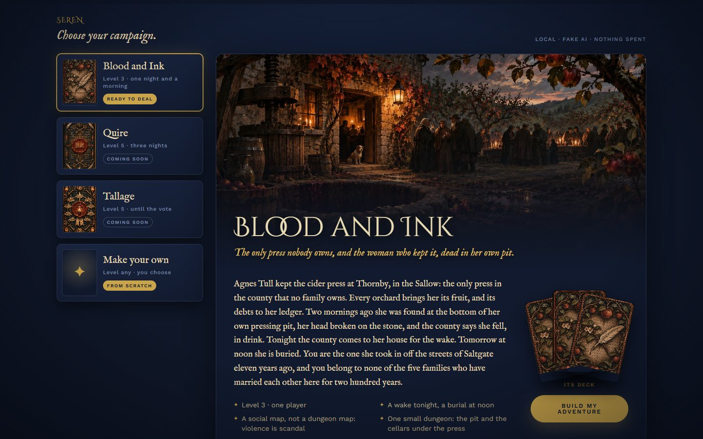
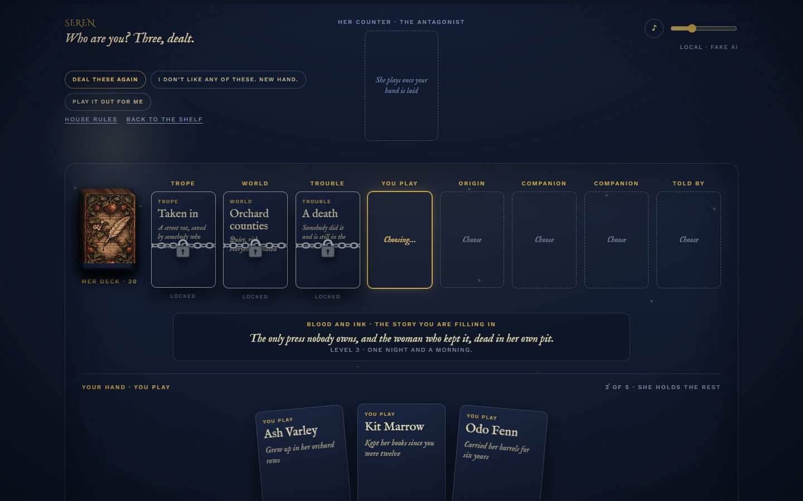
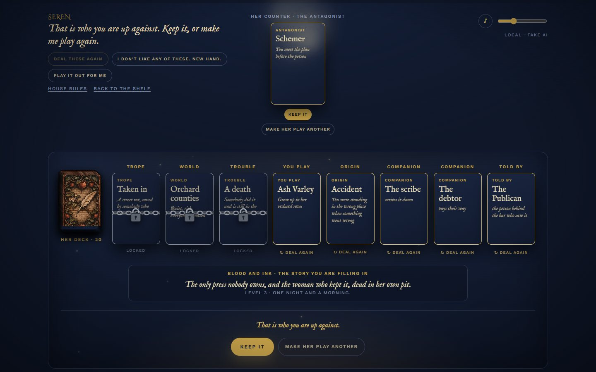
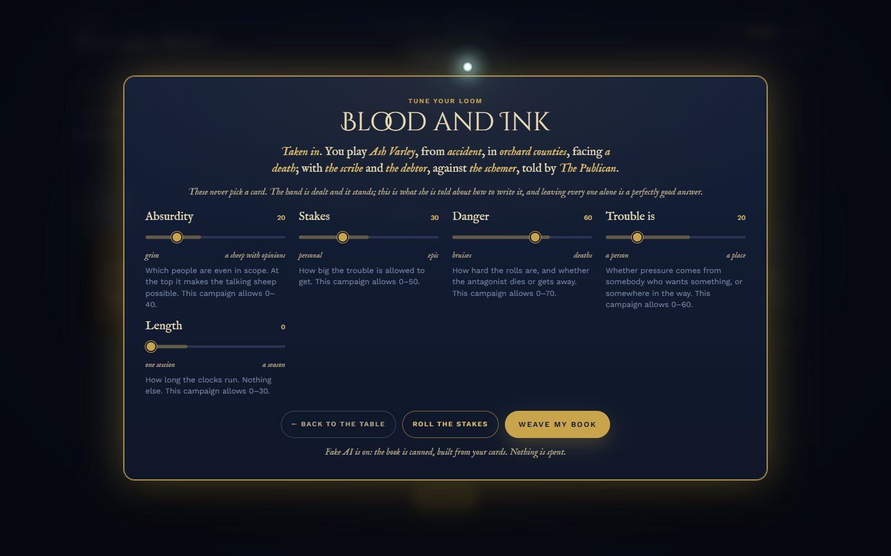
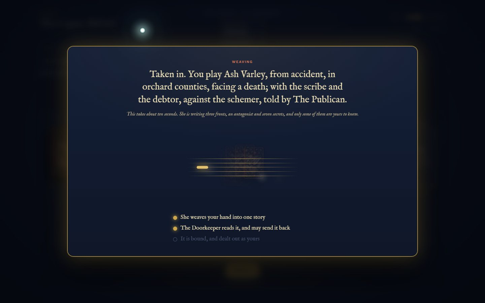
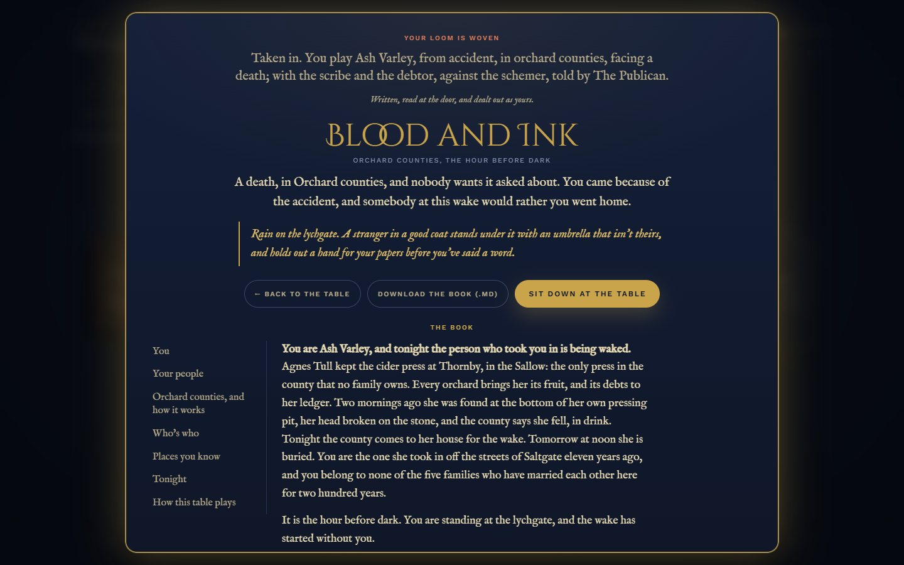
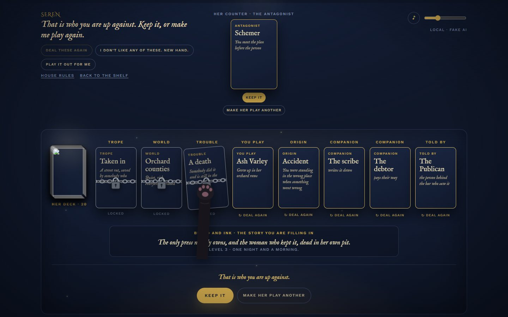

Seren deals you a story. Then she keeps it honest.
Pick a campaign, take the hand she deals, turn her card over, and get the book before session one. Nothing before the book uses AI: the shelf, the deal and the dials are code.
Choose a campaign, or make your own.
Blood and Ink is ready: level 3, one night and a morning, a woman dead in her own pressing pit and a wake tonight. Quire and Tallage are on the shelf and coming.
Each one carries its own card back. Make your own opens the Loom, where nothing is locked.

Her deck sits on the felt. Every open slot is a hand.
The cards that make it that story arrive face up, in chains. The rest are dealt from her deck, three at a time. Read what a card changes, then play it, or deal again.
The story you chose.
A hand to pick from.

Shut until the story opens it.

When your hand is laid, she plays hers. Face down.
Turn it over and you meet who you are up against. Keep it, or make her play another.
Your picks don't have to fit each other. You get what you asked for, made to work: the weaver writes the world that hand implies, and the book is the reveal.

Five dials. None of them picks a card.
Absurdity, stakes, danger, whether trouble is a person or a place, and how long the clocks run. A campaign can narrow each range. Then about ten seconds of weaving, and the Doorkeeper reads it before you do, and may send it back.


Before session one, she hands you the book.
Who you are, your people, how the place works, who's who, tonight. Everything in this book is true. The rest of the valley is there to find.
Download it as markdown, then sit down at the table. On this laptop the book is written by a stand-in from your cards; the real weave runs on the server.

Every minute or so, something nobody asked for.

Random encounters that entertain, not ones that pile up.
The Director is code. It reads the log and the villains' plans, and picks the next side quest or bit of DM mischief with seeded dice. The model narrates what was chosen and never sees why.
Before anything fires, one question: does this add to what's happening, or distract from it? And never within seven turns of the last one, whatever the answer.
What happened is written down. She can colour it. She can't change it.
The book is a contract.
Fixed and versioned when the Doorkeeper passes it. Play sits on top, so a redeal or a replay starts clean.Decided for 1.5The log is the record.
Every roll and ruling is a line in the ledger. A fix is a new line, never an edit.Built on the web tableDice she can't fudge.
The server rolls and writes it down. A roll can be interpreted. It cannot be reversed.Built on the web tableFog that holds.
A secret she's holding, the gate won't let her say. In Claude, the secrets stay on our server and never reach the model at all.Server-side in 1.5Bring the character you already built in D&D Beyond.
The build stays where it is. Seren fits it to the campaign: a level 10 steps down a level at a time, a fresh level 1 steps up, on one screen, like a character sheet in a game.
Going down is a choice, not a subtraction: spells and items get chosen again. The shape is decided. It isn't built yet.
Oriel Thane
Write the campaign. Seren deals it differently to every player.
Lock the spine.
Per slot, choose locked, dealt or sealed. Lock what makes it your story; seal the killer.
In the formatWrite the decks.
Three or four origins, your own cast as companions, the voices it suits, two or three antagonists.
In the formatIts own card backs.
A deck that looks like your story.
Three madeSet the dials' range.
Grim to wry, not grim to a sheep with opinions. Players tune inside your range.
BuiltAllow and block lists.
Which tropes and mischief can ever reach your table, from a shared library of thousands.
Decided, not builtThe truths stay yours.
What each card really means lives in a file the browser never gets. Only the weave reads it.
In the formatOther AI tables are good at maps and minis. Seren is built for one player and a story that holds.
- →The deal before the story. A campaign you shape in cards, not a blank prompt.
- →Believed and true are kept apart. Your character can be wrong, and the game knows it.
- →Rulings stand. A result can be coloured, never turned from success into failure.
- →A book you keep. The briefing is yours before play. A chronicle at the end comes in 1.5.
- ×Maps and a virtual tabletop. One dungeon with fog comes in 1.5; prettier maps aren't the point.
- ×A full party of humans. Multiplayer is 1.6.
- ×Taking a roll back. Ever.
- ×Every system. She starts with 5e.
Blood and Ink is on the table.
One night and a morning. A wake tonight, a burial at noon, and somebody at the wake who would rather you went home.